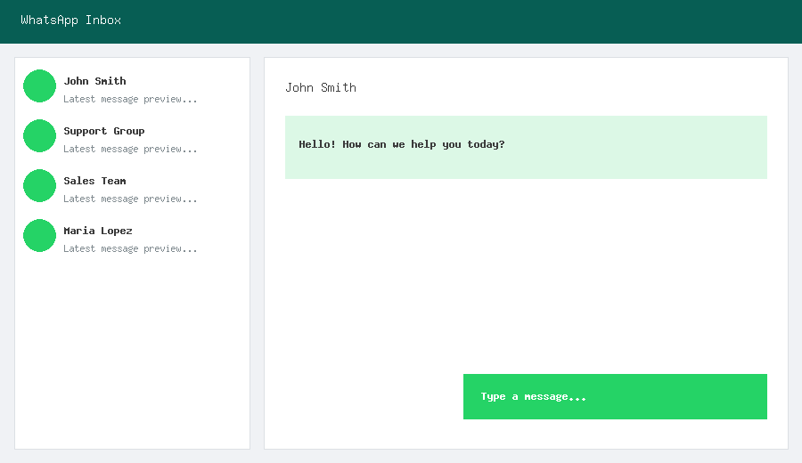
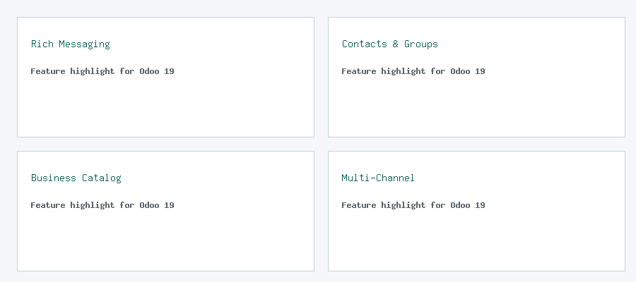
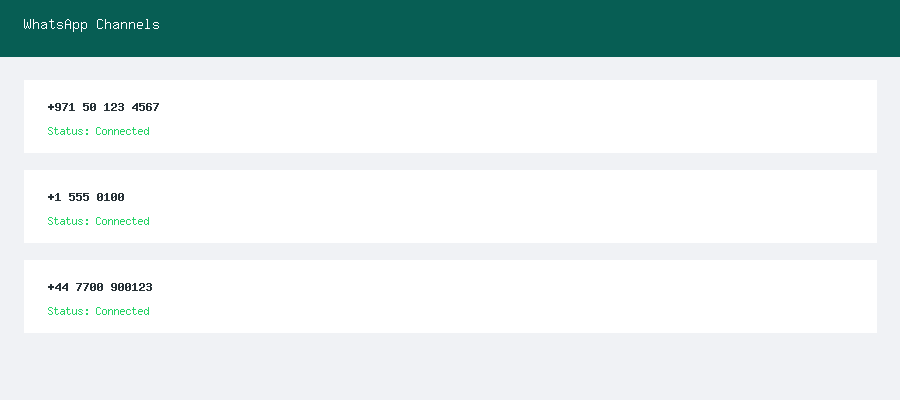
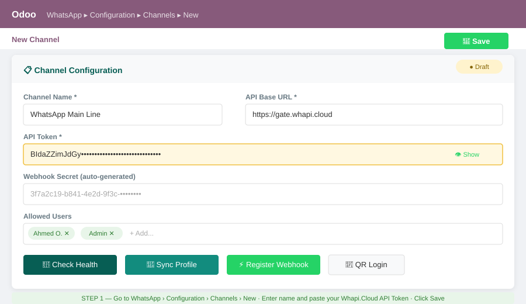
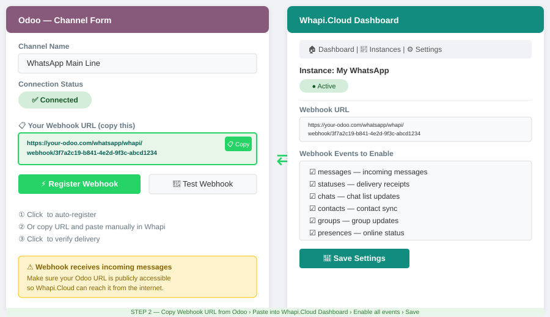
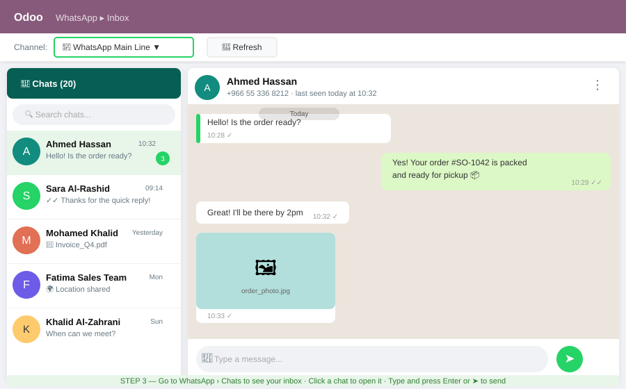
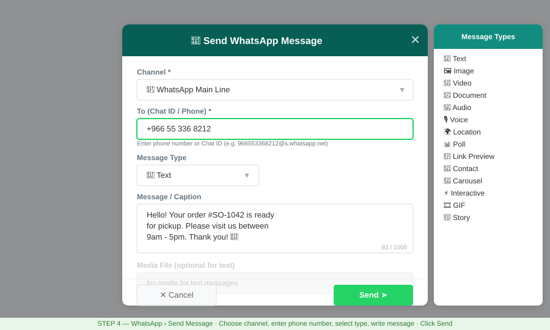
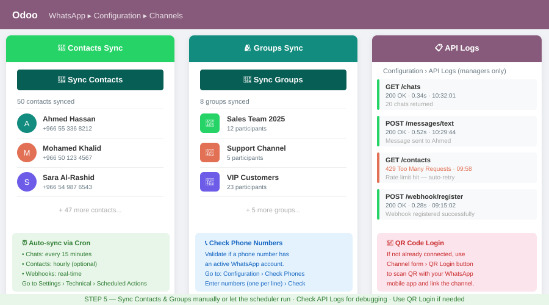

WhatsApp Whapi brings a complete, standalone WhatsApp inbox directly into Odoo 19. Powered by the Whapi.Cloud REST API, this module lets you send and receive WhatsApp messages, manage contacts, groups, media, newsletters, and your full WhatsApp Business catalog — all without leaving Odoo.
Whether you run a sales team, a support desk, or an e-commerce business, WhatsApp Whapi centralises all your WhatsApp communication inside Odoo with real-time webhook updates, automatic chat synchronisation, and role-based access control.
A dedicated inbox view lets you switch between conversations, read and send messages of any type (text, image, video, document, location, poll, interactive…) and see real-time delivery status — all inside Odoo.


Text, images, videos, audio, documents, stickers, locations, polls, carousels and interactive buttons.
Sync your WhatsApp contacts list, validate phone numbers, manage groups and participants.
Sync products, collections, and orders from your WhatsApp Business catalog directly into Odoo.
Manage WhatsApp Channels (newsletters), subscribe/unsubscribe, and track subscriber counts.
Incoming messages arrive instantly via webhook. Scheduled cron jobs keep chats and contacts up-to-date.
Connect multiple WhatsApp numbers. Assign channels to teams with WhatsApp User / Manager roles.
Full audit trail of every API call for debugging and compliance. Accessible to managers only.
Scan a QR code directly from Odoo to link your WhatsApp number via the Whapi.Cloud session.
Upload, store and reuse media files. Attach Odoo ir.attachment files to outgoing messages.
Each WhatsApp number is represented as a Channel in Odoo. Simply paste your Whapi.Cloud API token, set the webhook URL in the Whapi dashboard, and you're live.

Follow these 5 steps to get WhatsApp running inside Odoo in under 10 minutes.
Sign up at whapi.cloud, create a new
instance for your WhatsApp number, and copy your API Token
from the instance dashboard. You'll also need the base URL: https://gate.whapi.cloud.
BIdaZZimJdGy…

Go to WhatsApp → Configuration → Channels → New. Enter a name, paste your API token, and click Save. Then click ⚡ Register Webhook — Odoo will automatically push the webhook URL to Whapi.Cloud so all incoming messages arrive in real time. Alternatively, copy the Webhook URL manually and paste it in your Whapi.Cloud instance settings.
messages,
statuses, chats, contacts, groups,
presences for full sync.

Navigate to WhatsApp → Chats (or click Open Inbox from the channel form). The left panel shows all your conversations — click any chat to open it. The right panel shows the full message history with delivery status (✓ sent, ✓✓ delivered, ✓✓ blue = read). Type a message at the bottom and press Enter or the send button ➤ to reply.

Go to WhatsApp → Send Message to open the composer wizard. Select the channel, enter the recipient's phone number or WhatsApp Chat ID, choose the message type (text, image, video, document, audio, location, poll, link preview, interactive, carousel…), write your message, and click Send ➤.
Phone format: Enter the number with country code (e.g. 966553368212)
— Odoo will automatically format it as a WhatsApp Chat ID.
You can also paste a full Chat ID like 966553368212@s.whatsapp.net.

From the Channel form, click Sync Contacts or Sync Groups to import your WhatsApp contacts and group chats into Odoo. These are also available in the menu under WhatsApp → Contacts and WhatsApp → Groups & Media → Groups.
Automated cron jobs keep your chats updated every 15 minutes. Go to WhatsApp → Configuration → API Logs to audit every API call — useful for debugging failed messages or rate-limit issues.

odoo-bin -i whatsapp_whapi).
| Version | 19.0.1.0.0 |
| Category | Productivity |
| License | LGPL-3 |
| Dependencies | base, web, mail |
| External API | Whapi.Cloud (gate.whapi.cloud) |
| Author | leapai.ai |
| Maintainer | sales@leapai.ai |
| Support | sales@leapai.ai |
Location: King Abdulaziz Branch Road, Riyadh, Saudi Arabia
Email: sales@leapai.ai
Phone: +966 53 553 3627
Website: https://leapai.ai
Developer: Abdulkaraim Osman — Tech Manager | Backend Engineer | DevOps Engineer at Bab International Corp For Specialized Services
LinkedIn: linkedin.com/in/abdulkaraim-o-385b7a110